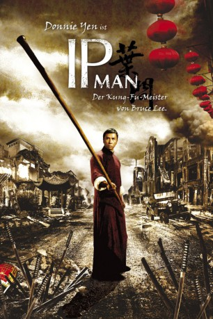

#479 Ip Man 1
 
 IMDB-Wertung: 8.0 / 10
IMDB-Wertung: 8.0 / 10  Metascore: 59
Metascore: 59 
Im China der Vorkriegszeit ist Ip Man der berühmteste Vertreter der Martial-Arts-Kampfkunst "Wing Tsun". Doch als die Japaner ins Land einmarschieren und seine Heimatstadt gewaltsam einnehmen, kann er nicht mehr für seine Familie sorgen und sieht sich gezwungen, im Bergwerk zu arbeiten. Als nach einem Kampfpartner gefragt wird - gegen einen Sack Reis im Falle des Siegs - meldet er sich. Auch ein alter Freund Ip Mans nimmt das Angebot an und stellt sich den Japanern in einem der brutalen Martial Arts-Kämpfe. Doch das fatale Duell endet für seinen Freund tödlich. Von Gerechtigkeit beflügelt versucht Ip Man nun, den japanischen Soldaten auf seine eigene Art und Weise gegenüberzutreten. Es kommt zu einem alles entscheidenden Duell zwischen ihm und General Miura...
Jahr: 2008
Dauer: 106 Minuten
FSK: 18
Land: Hong-Kong Studio: Splendid FilmTonspuren:
Untertitel: Deutsch,
Auflösung: 1080p (1920x816) Größe: 8888 MB
Genre: Action, Drama, Sport, Biographie
Regisseur: Wilson Yip
Drehbuch: Edmond Wong, Tai-lee Chan
Soundtrack: Kenji Kawai
Darsteller:
 Donnie Yen als Yip Man
Donnie Yen als Yip Man Simon Yam als Chow Ching-Chuen
Simon Yam als Chow Ching-Chuen Siu-Wong Fan als Jin Shan Zhao / Kam Shan-Chau
Siu-Wong Fan als Jin Shan Zhao / Kam Shan-Chau- Lynn Hung als Cheung Wing-Sing
 Hiroyuki Ikeuchi als Miura
Hiroyuki Ikeuchi als Miura Ka Tung Lam als Captain Lei Chiu
Ka Tung Lam als Captain Lei Chiu- Tenma Shibuya als Colonel Sato
 Xing Yu als Master Zealot Lam
Xing Yu als Master Zealot Lam- Zhi-Hui Chen als Master Liu
- You-Nam Wong als Sa Dam Yun
- Rong-Jun Cai als Cotton Mill Worker
- Li Chak als Yip Chun
- Siu-Kwan Chan als Waiter
- Calvin Ka-Sing Cheng als Chow Kong-Yiu
- Shi De-Qiang als Southern master
- Yu-Lam Fan als Cotton Mill Worker
- Meng-Xin Han als Lei Chiu's daughter
- Liu Jun als Cotton Mill Worker
- Chen Ka-Da als Uncle Wong
- Lu Kai als Jin Shan Zhao's underling
- Kong Kam als Jin Shan Zhao's underling
- Siu-Hung Leung als Green Dragon Club Master
- Qilong Li als Master Lei
- Ming Zhe Liu als Righteous Club Master
- Lu Mei-Fang als Cotton Mill Worker
- Sheng Qi-Rong als Lei Chiu's father
- Rui-Jun Shi als Cotton Mill Worker
 Yu-Hang To als Hu Wei
Yu-Hang To als Hu Wei- Hui-Liang Wang als Cotton Mill Worker
- Xiao-Fang Wang als Yip Man's maid
- Zheng Wang als Cotton Mill Worker
- Mao Wen-Jun als Jin Shan Zhao's underling
- Chuan-Jian Xu als Cotton Mill Worker
- Ming-Yu Xu als Cotton Mill Worker
- Xu-Feng Yang als Cotton Mill Worker
- Ding Yi-Lan als Cotton Mill Worker
- Ku Yin als Cotton Mill Worker
- Gao Yuan als Cotton Mill Worker
- Jaco Bo Zhang als Jin Shan Zhao's underling
- Bian Zheng als Cotton Mill Worker
- Zhong Zhou als Master Ho
Datei: X:\HD-Eastern-Collections\Ip Man\Ip Man 1 (2008, FSK18, 1920x816).mkv seit 01.03.2015
Festplatte: HD Eastern+Western
 Es gibt insgesamt 11 Filme in der Gruppe 'HD-Eastern-Collections\Ip Man'
Es gibt insgesamt 11 Filme in der Gruppe 'HD-Eastern-Collections\Ip Man'